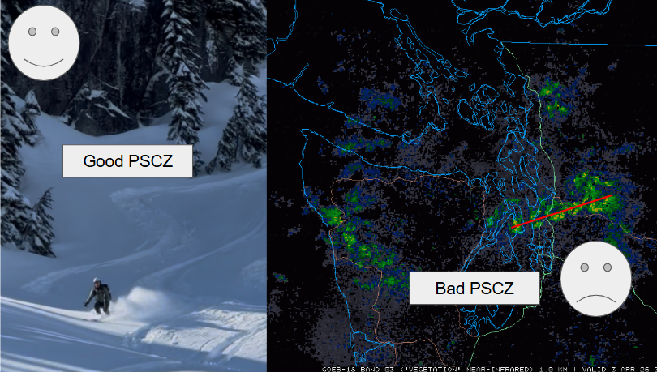
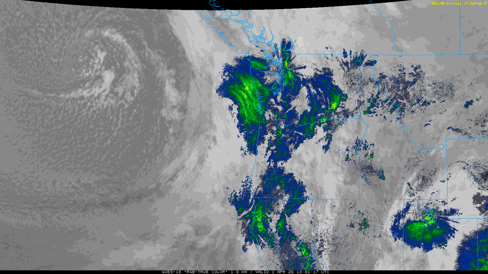
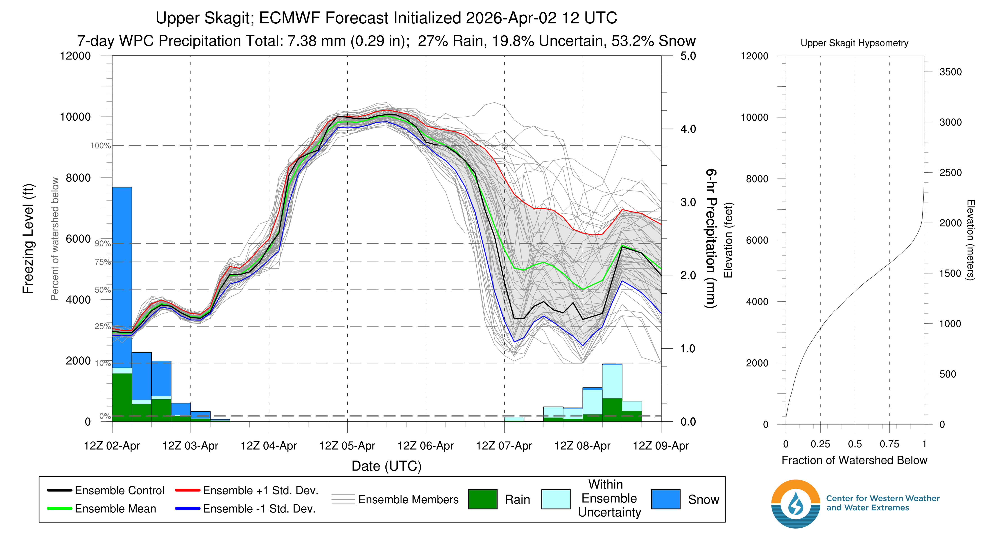
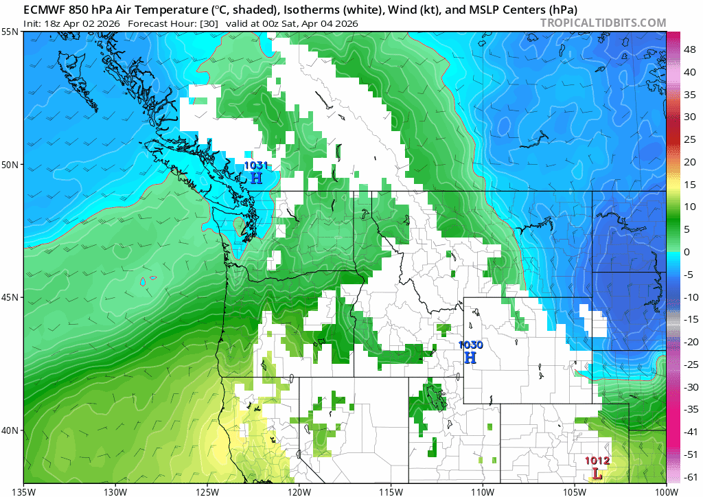
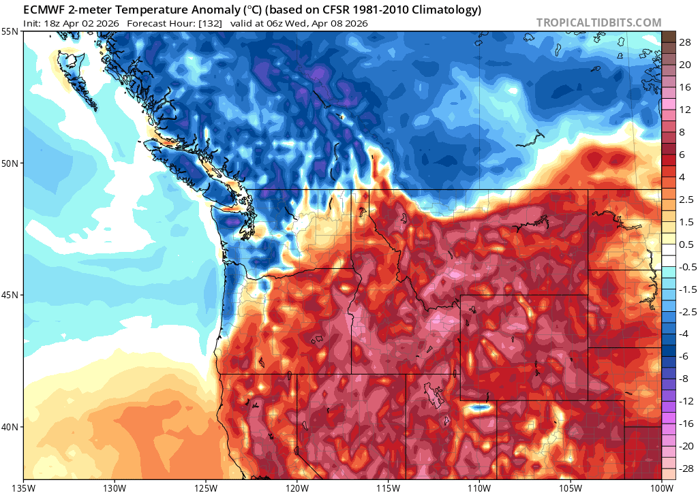
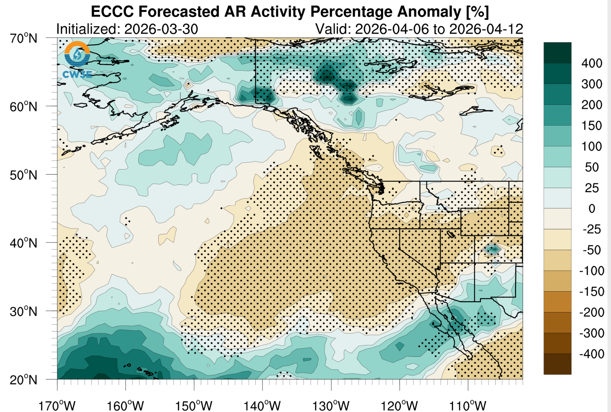

🌼 A Warm, Dry Spell Kicks In After Last Week's Refresh
Welcome to The Dendritic Growth Zone!
Past Week's Recap
This week brought another dose of mixed, springtime conditions. The week started off with clear skies and cool temperatures
as a low pressure system descended from the Gulf of Alaska. Temperatures began to moderate as high clouds approached, the cloud deck
lowered, and a frontal system passed through the region on Wednesday. This brought
periods of moderate rain to the lowlands and some decent snowfall to elevations above 4000 feet and high winds.
 
Once this storm passed through, this
cooler air stuck around as cold air cumulus dropped occasional showers throughout Puget Sound and kept snow falling in many
mountain locations. Snow totals around the region
generally ranged from 4-6", but Paradise appears to have won at with over 12" recorded over the past 2 days.
A Puget Sound Convergence Zone also set up Thursday afternoon, although unlike last week, its orientation was a bit tilted southwest
to northeast, which didn't allow for a big snow dump for Stevens.
Nevertheless, there were still several reports of great ski conditions and some of the best coverage of the season!
We hope you had the chance to get out and enjoy it.
On a broader scale, this passing low pressure system has continued its march east and brought a brief reprieve from the heat and some much needed snow to parts of
the intermountain west. However, the damage has been done and southwestern snowpack has almost certainly past its peak for
this year.
🧙♂️ Forecast Discussion
Short-term (Friday-Sunday)
Get ready for a bluebird powder-adjacent weekend! I say powder-adjacent because the snow will have aged a bit by the weekend on certain aspects.
Nevertheless, with the mid-week storm dropping some fresh snow and no AR in sight (except for a super weak AR-like system hitting central BC), this
weekend is shaping up to be quite a pleasant one in the mountains. On Friday, some showers may linger as residual moisture from
the departing low pressure system is filtered out of the area. However, clouds will begin to diminish through the day as a ridge
begins to build. If skies fully clear, expect Saturday morning to be a bit chilly in mountain valleys, but expect a warm day up high.
850-mb (~5000 feet) tempeatures are forecast to be into the mid-40s.


Medium-Term (Monday-Wednesday)

The medium term looks somewhat dynamic but mostly dry. The ridge will remain in place with warm temperatures through Monday but a weak system may clip northern Washington on Tuesday. At the very least, this system will mix in colder air and return our tempertures to seasonable levels. Once this weak system passes, a stronger ridge over the Gulf of Alaska builds, which will keep temperatures near normal, but also keep us dry through the middle of next week.
🧙🔮🧙♂️ Reading the crystal ball - 7+ day outlook
Longer term ensembles have been doing pretty well lately. Last week, Clinton wrote that both the European and American models hinted at persistent ridging off of the West Coast. Since then, this has generally been the case, and we see generally more of the same for the coming longer term period. Additionally, there is high confidence that we not see any ARs in the near future. Given that, we will likely be transitioning into an actual spring ski season (during spring!!). At least we don't have to use "spring skiing" as a coping mechanism like we did in January...

❄️ Snowfall
Weekend Snow Accumulation Forecast
| Site | Through 4am Saturday | Through 4am Sunday | Weekend Snow Accumulation (4pm Thursday through 4am Monday 30 Mar) |
|---|---|---|---|
| Mt. Baker (4500') | 0-2" | 0" | 0-2" |
| Washington Pass | 0" | 0" | 0" |
| Stevens Pass (4500') | 0" | 0" | 0" |
| Hurricane Ridge | 0" | 0" | 0" |
| Blewett Pass | 0" | 0" | 0" |
| Snoqualmie Pass | 0" | 0" | 0" |
| Crystal (5000') | 0" | 0" | 0" |
| Paradise | 0" | 0" | 0" |
| White Pass (5000') | 0" | 0" | 0" |
🧊 Freezing Level
- Friday: 3000-6000 feet
- Saturday: 7000-10000 feet
- Sunday: 9000-10000 feet
🎿 Our Recommendations
Best Choice This Weekend: Tatoosh Range in Mt. Rainier NP on Saturday
With a sunny bluebird day on Saturday, fresh snow from earlier in the week, and plenty of polar aspects to choose from, the Tatoosh range could be a great spot. Otherwise, Paradise should have some good snow to find. If you can't get out to MRNP and want to ski drier, lower density snow stick to polars.
Runner-Up: Volcano skiing Sunday
The risk here is skiing lots of mush as the fresh snow begins its transtion to corn. We call this "proto-corn" as it skis somewhat like corn, but definitely has a little more bite and must be timed it right. Waiting until Sunday gives the snow a bit more time. Skiing on volcanoes this weekend will be beautiful at the very least.
Runner-Up: Honorable mention: hanging in the lowlands
Here me out: if you can't get out to the mountains, definitely go outside. This weekend is a great opportunity to enjoy some (relatively) warm and sunny weather.
🚧👷Cascade Mountain Weather Updates👷🚧!
Patches are in! CMW hats will be on sale soon but in limited supply. Reach out if you're interested. We'll be selling them for $25.